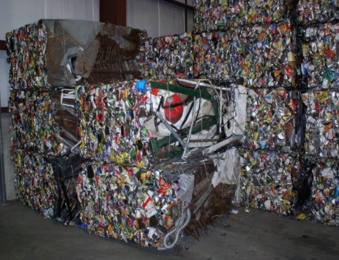

Petromin, a subsidiary company of ADG, is a leading lubricants and automotive services company. They are seeking technologies that will cost-effectively recycle and/or repurpose (oil) contaminated High-Density Poly Ethylene (HDPE) waste, in a way that decreases its disposal, thereby lowering Petromin’s carbon footprint.
Currently, the Middle East is responsible for 8 per cent of global plastic production. Every year, the Kingdom of Saudi Arabia generates 1.2 Million tons of plastic waste. Due to inevitable population growth, economic development and urbanization this number is expected to double by 2033.
A large part of this plastic waste consists of used HDPE packaging: that is why Petromin wants to make it their responsibility to contribute to combating this continuously growing waste mountain.
Under this project, Petromin is seeking new, innovative technologies/solutions that will contribute to tackling the ever-growing plastic waste crisis, specifically with regards to the oil-contaminated HDPE packaging (see Figure 1). This contamination makes recycling and reusage very challenging.
Moreover,it is neither cost-effective nor economically viable. The currently used decontamination methodologies also have a significant impact on the cost-effectiveness of the entire recycling process.
Submissions to this Challenge must be received by Dec 17, 2020.
Source and submissions: Ninesights